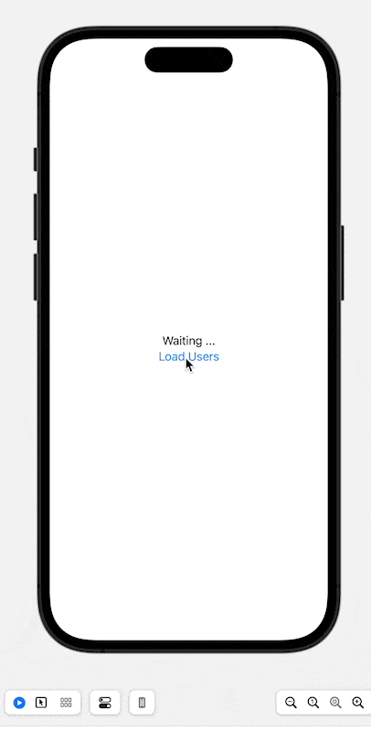

Une énumération en programmation est un type de données qui permet de définir un ensemble fini de valeurs nommées.
Cela facilite la représentation de concepts avec un ensemble restreint de choix prédéfinis.
En général, une énumération est définie en tant qu'une liste de constantes nommées, appelées membres de l'énumération, qui représentent les différentes valeurs possibles.
Par exemple, en swift :
enum Couleur { case ROUGE case VERT case BLEU}Dans cet exemple, l'énumération « Couleur » est définie avec trois membres : ROUGE, VERT et BLEU. Ces membres peuvent ensuite être utilisés pour déclarer des variables ou effectuer des comparaisons dans le code.
Soit l’énumération suivante, qui représente les jours de la semaine :
xxxxxxxxxxenum DaysOfWeek { case sunday case monday case tuesday case wednesday case thursday case friday case saturday}Imaginons une fonction whatToDo qui permet de savoir que faire tel jour, cette fonction aura pour signature :
xxxxxxxxxxfunc whatToDo(day: DaysOfWeek) -> String { // TODO CODE}Maintenant, nous allons faire un switch sur la variable day:
xxxxxxxxxxfunc whatToDo(day: DaysOfWeek) -> String { switch day { case .sunday: return "Go to churche" case .monday: return "Go to work" case .tuesday: return "Back to work" case .wednesday: return "go to gym" case .thursday: return "One more day" case .friday: return "last day" case .saturday: return "go shoping" }}L’utilisation est alors triviale :
xxxxxxxxxxprint(whatToDo(day: .saturday))Cela nous donnera en sortie :
xxxxxxxxxxgo shopingComme prévu.
Cette fois, nous allons créer une fonction isWeekendDay qui permettra de savoir si un jour fait partie du weekend ou non.
La signature de cette fonction sera :
xxxxxxxxxxfunc isItWeekend(day: DaysOfWeek) -> Bool { switch day { case .saturday, .sunday: return true default: return false }}Ici le paramètre est encore un paramètre du type DaysOfWeek, on switch sur la variable day et si c’est un samedi ou un dimanche alors on retourne true.
Ce que nous pouvons tester comme ceci :
xxxxxxxxxxprint(isItWeekend(day: .friday).description) // Output: falseprint(isItWeekend(day: .sunday).description) // Output: trueMaintenant, imaginons que nous souhaitions accéder à la valeur de l’énumération, par exemple, on peut écrire :
xxxxxxxxxxprint(DaysOfWeek.friday) La sortie sera :
xxxxxxxxxxfridayMais, maintenant, imaginons une seconde énumération :
xxxxxxxxxxenum Numbers { case one case two case three case four case five}Cette fois si on écrit :
xxxxxxxxxxprint(Numbers.four)Ainsi la sortie sera :
xxxxxxxxxxfourCe qui ne sert pas à grand-chose. Alors, nous allons reprendre la première énumération et la faire se conformer à String et attribuer à chaque cas une valeur :
xxxxxxxxxxenum DaysOfWeek: String { case sunday = "Sun" case monday = "Mon" case tuesday = "Tue" case wednesday = "Wed" case thursday = "Thur" case friday = "Fri" case saturday = "Sat"}Cette fois si on utilise la même méthode que précédemment, mais en appelant la propriété rawValue:
xxxxxxxxxxprint(DaysOfWeek.friday.rawValue) La sortie sera cette fois :
xxxxxxxxxxFriAinsi ou l’utilité devient plus évidente avec la seconde énumération Numbers et faisons là se conformer à Int:
xxxxxxxxxxenum Numbers: Int { case one case two case three case four case five}Cette fois si on appelle la propriété rawValue :
xxxxxxxxxxprint(Numbers.four.rawValue)On Obtient en sortie : 3
Maintenant, modifions un peu notre énumération en ajoutant au premier cas une valeur de type Int, juste sur la première valeur, car les autres valeurs seront autoincrémentées :
xxxxxxxxxxenum Numbers: Int { case one = 1 case two case three case four case five}Cette fois :
xxxxxxxxxxprint(Numbers.four.rawValue)Retournera : 4
Évidemment, si on modifie la valeur initiale à -1 par exemple, alors la sortie sera : 2
Il est tout à fait possible de parcourir une énumération comme une collection, pour ce faire, vérifier que l’énumération se conforme à CaseIterable, notre première énumération devient ainsi :
xxxxxxxxxxenum DaysOfWeek: String, CaseIterable { case sunday = "Sun" case monday = "Mon" case tuesday = "Tue" case wednesday = "Wed" case thursday = "Thur" case friday = "Fri" case saturday = "Sat"}Maintenant, nous pouvons appliquer les opérations dédiées aux collections à nos énumérations.
Imaginons que nous souhaitions mettre en majuscule toutes les rawValue et les afficher :
xxxxxxxxxxDaysOfWeek .allCases .map { $0.rawValue.uppercased() } .forEach { print($0) }Ce qui nous donne en sortie :
xxxxxxxxxxSUNMONTUEWEDTHURFRISATNous voulons parcourir les valeurs de l’énumération et afficher si ce jour fait partie du weekend ou non :
xxxxxxxxxxDaysOfWeek .allCases .map { switch $0 { case .saturday, .sunday: print("\($0) is weekend") default: print("\($0) is workday") } }Ce qui propose en sortie :
xxxxxxxxxxsunday is weekendmonday is workdaytuesday is workdaywednesday is workdaythursday is workdayfriday is workdaysaturday is weekendDe plus, on peut ajouter des valeurs associées aux énumérations.
Les valeurs associées dans une énumération (enum) en Swift permettent d'attribuer des données spécifiques à chaque cas de l'énumération.
Chaque cas peut être associé à une ou plusieurs valeurs, qui peuvent être de types différents.
Cela permet de représenter des situations où chaque cas de l'énumération nécessite des informations supplémentaires pour être complètement défini.
Par exemple :
xxxxxxxxxxenum SimpleEnum { case name(String) case age(Int)}xenum Media { case book(title: String, author: String) case movie(title: String, director: String) case song(title: String, artist: String)}
let myBook = Media.book(title: "The Great Gatsby", author: "F. Scott Fitzgerald")let myMovie = Media.movie(title: "Inception", director: "Christopher Nolan")let mySong = Media.song(title: "Bohemian Rhapsody", artist: "Queen")
switch myBook {case .book(let title, let author): print("Book: \(title) by \(author)")case .movie(let title, let director): print("Movie: \(title) directed by \(director)")case .song(let title, let artist): print("Song: \(title) by \(artist)")}
Maintenant passons à un exemple plus concret à savoir la gestion des erreurs, pour commencer simplement examinons le cas de la division et surtout de la division par 0.
Nous allons utiliser le type Result de swift qui aura la signature Result<Double, Error> .
Le seul cas que nous envisagerons est bien sûr la division par zero, nous allons donc créer une enum qui ne contiendra qu’un cas :
xxxxxxxxxxenum CalculusError: Error, CustomStringConvertible { case divisionByZero var description: String { return "Division by zero is not allowed" }}Maintenant nous allons créer une fonction qui prendra en paramètres le dividende et le diviseur et renverra une valeur de type Result<Double, Error> , là nous allons tester la valeur du diviseur et renvoyer une erreur si il est égal à 0 et le résultat de la division dans le cas contraire :
xxxxxxxxxxfunc divide(dividend: Double, divisor: Double) -> Result<Double, Error> { if divisor == 0 { return .failure(CalculusError.divisionByZero) } else { return .success(dividend / divisor) }}Maintenant nous allons tester les deux divisions suivantes :
xxxxxxxxxxlet divideBy2: Result<Double, Error> = divide(dividend: 5, divisor: 2)let divisionBy0: Result<Double, Error> = divide(dividend: 6, divisor: 0)Pour éviter toute réécriture, nous allons créer une fonction qui prendra le résultat en paramètre et fera le switch:
xxxxxxxxxxfunc testDivision(result: Result<Double, Error>) { switch result { case .success(let result): print("Result: \(result)") case .failure(let error): print("Error: \(error)") }}
testDivision(result: divideBy2)testDivision(result: divisionBy0)Ce qui nous donne en sortie :
xxxxxxxxxxResult: 2.5Error: Division by zero is not allowedIl existe un autre moyen d’intercepter l’erreur retournée, cette fois avec un do/catch et la méthode get :
xxxxxxxxxxfunc testDivisionDoCatch(result: Result<Double, Error>) { do { let result = try result.get() print("Result with try/catch: \(result)") } catch { print("Error with try/catch: \(error)") }}
testDivisionDoCatch(result: divideBy2)testDivisionDoCatch(result: divisionBy0)Et la sortie sera équivalente :
xxxxxxxxxxResult with try/catch: 2.5Error with try/catch: Division by zero is not allowedVoici un premier exemple d’utilisation des énumérations pour gérer les erreurs.
Un automate fini est un modèle théorique utilisé en informatique et en théorie des langages pour représenter un système qui réagit de manière séquentielle à des entrées. Il se compose d'un ensemble fini d'états, d'un ensemble fini d'entrées, d'un ensemble fini de transitions et d'un ou plusieurs états finaux ou accepteurs. L'automate fini passe d'un état à un autre en fonction des entrées qu'il reçoit et des règles de transition définies. Il peut être utilisé pour reconnaître des langages formels, comme les expressions régulières, et pour modéliser des systèmes de contrôle et de traitement de l'information. L’automate s’écrira sour la forme :
xxxxxxxxxxenum TriStateSwitch { case off case low case high mutating func next() { switch self { case .off: self = .low print("low") case .low: self = .high print("high") case .high: self = .off print("off") } }}Ensuite nous pouvons utiliser la méthode next :
xxxxxxxxxxvar ovenLight = TriStateSwitch.off
ovenLight.next()ovenLight.next()ovenLight.next()Et la sortie est comme prévue :
xxxxxxxxxxlowhighoffIci nous allons utiliser l’API JSON Placeholder, nous allons récupérer les Users : https://jsonplaceholder.typicode.com/users Nous allons créer un projet de type iOS, là je vais utiliser la version 15 de Xcode en beta 6 à ce jour et le framework Observation.
Nous n’allons pas tout récupérer mais seulement les valeurs :
id
name
email La structure sera donc simple à écrire :
xxxxxxxxxxstruct User: Decodable, Identifiable { let id: Int let name: String let email: String}Là c’est assez trivial comme précédemment nous allons énumérer les erreurs possibles:
xxxxxxxxxxenum APIError: Error, CustomStringConvertible { case badURL case badResponse case decodingError var description: String { switch self { case .badURL: return "Bad URL" case .badResponse: return "Bad Reponse from server" case .decodingError: return "Decoding Error" } }}Ici nous allons créer un service APIService, qui sera en charge de rapatrier les données de l’API :
xxxxxxxxxxstruct APIService { func fecthUsers() async throws -> [User] { guard let url = URL(string: "https://jsonplaceholder.typicode.com/users") else { throw APIError.badURL } let (data, response) = try await URLSession.shared.data(from: url) guard let httpResponse = response as? HTTPURLResponse, httpResponse.statusCode == 200 else { throw APIError.badResponse } do { let users = try JSONDecoder().decode([User].self, from: data) return users } catch { throw APIError.decodingError } }}Assez trivial aussi, j’envisage 4 cas :
xxxxxxxxxxenum APIState { case idle case loading case loaded([User]) case error(Error)}Ici nous allons renseigner l’état en fonction des retours des appels à la fonction spécifiée dans le service :
xxxxxxxxxx@Observablefinal class APIObservable { var state: APIState = .idle let service: APIService = APIService() func fectchUsers() async { state = .loading do { let users = try await service.fecthUsers() state = .loaded(users) } catch { state = .error(error) } }}Ici je la veux très simple :
xxxxxxxxxxstruct ContentView: View { @State private var apiObs: APIObservable = APIObservable() @ViewBuilder private func listUsers(state: APIState) -> some View { switch state { case .idle: VStack { Text("Waiting ...") Button("Load Users") { Task { await apiObs.fectchUsers() } } } case .loading: ProgressView() case .loaded(let users): List(users) { user in Text(user.name) } case .error(let error): Text(error.localizedDescription) } } var body: some View { VStack { listUsers(state: apiObs.state) }
}}Et voilà un autre exemple
